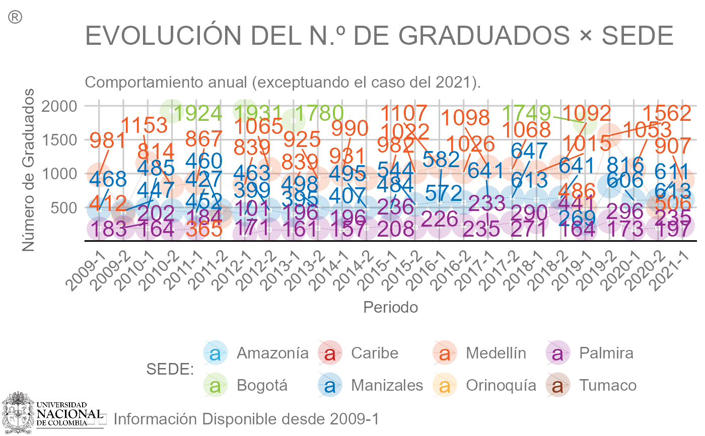

Plot.Series.RdEsta función proporciona excelentes herramientas y opciones para la visualización
de series de tiempo dinámicas con el objetivo de estudiar la evolución de una
o varias variables a lo largo del tiempo. Dicha serie interactiva se puede
representar usando tres diferentes librerías que son Highcharter, Plotly
y Dygraph, las cuales usan internamente JavaScript.
Plot.Series(
datos,
tiempo,
valores,
categoria,
freqRelativa = FALSE,
invertir = FALSE,
ylim,
colores,
titulo = "",
labelX = "Periodo",
labelY = "",
libreria = c("highcharter", "plotly", "dygraphs"),
estilo = NULL,
estatico = FALSE
)Un data frame, no un objeto clase serie de tiempo o vector numérico.
Lista de variable(s) tanto numéricas como categóricas que se concatenaran para crear un único periodo temporal (ordenado ascendentemente).
Variable numérica que contiene los valores que desea graficar.
Una variable categórica dentro del data frame ingresado en datos.
Si es FALSE (valor predeterminado) la serie graficada
representará las frecuencias absolutas (conteo) más no las relativas (porcentaje).
Si es FALSE (valor predeterminado) no se invertirá el eje
Y. Establézcalo en TRUE si desea que en el eje Y el número más alto
sea el más cercano al origen.
Vector numérico que especifica el límite inferior y superior,
respectivamente, del eje Y. Si no se introduce algún valor se mostrará
todo el rango disponible para dicho eje.
Cadena de caracteres indicando los colores con los cuales se
deben colorear cada una de las series correspondiente a cada nivel del
argumento categoria. Si no se introduce algún vector se usará la paleta
rainbow por defecto.
Cadena de caracteres indicando el título principal del plot.
Cadena de caracteres indicando la etiqueta del eje X. Por
defecto se emplea el rótulo "Periodo".
Cadena de caracteres indicando la etiqueta del eje Y.
Cadena de caracteres que indica el paquete con el cual se
realizará la serie. Los valores permitidos son "highcharter"
(valor predeterminado), "plotly" o "dygraphs". Los valores se emparejarán
parcialmente.
Lista compuesta por varios parámetros, los cuales van a ser usados de acuerdo con la librería especificada para graficar la serie y cuyo objetivo es personalizar pequeños detalles de ésta.
LegendTitle: Cadena de caracteres indicando un título para la leyenda
(diferentes niveles del argumento categorias). Se utilizará tanto
en el paquete Highcharter como en Plotly.
hc.Tema: Modifica el tema con el cual se creará la serie. Los posibles
valores son un número entero entre \([1, 10]\) el cual hace referencia
a diferentes temas disponibles en dicha librería (ffx, google, tufte,
538, ggplot2, economist, sandsignika, ft, superheroes y flatdark,
respectivamente). El tema por defecto, al no ingresar valor alguno, es
hc_theme_flat().
hc.Slider: Si es TRUE agrega un deslizador/navegador dinámico en la
parte inferior de la serie. Proporciona herramientas para acercar y alejar
partes de la serie, así como para desplazarse por el conjunto de datos.
El valor por defecto es FALSE.
hc.BoxInfo: Si es TRUE (valor predeterminado) la información
concerniente a cada punto se visualiza conjuntamente en un cuadro, o de
forma individual (FALSE) al pasar el cursor sobre él.
hc.Credits: Cadena de caracteres indicando un subtítulo o etiqueta de
créditos debajo del título principal.
ply.LegendPosition: Lista que especifica la posición y orientación de
la leyenda. Los valores por defecto la ubican centrada verticalmente a la
derecha del plot, es decir, c(x = 1, y = 0.5, orientation = "v").
ply.Interaction: Cadena de caracteres que determina el modo de las
interacciones de desplazamiento. Los valores permitidos son "x unified"
(valor predeterminado), "y unified", "closest", "x", "y" y
FALSE.
ply.Credits: Lista que especifica la posición y texto para añadir un
subtítulo o etiqueta de créditos a la serie principal, por ejemplo,
c(x = 0.2, y = 1, text = "https://...").
dyg.LegendWidth: Número que indica el ancho (en píxeles) que
ocupará la leyenda. El valor por defecto es 250.
dyg.Resaltar: Si es FALSE (valor predeterminado) no se resaltará
la serie en que se sitúa el cursor.
gg.Tema: Modifica el tema con el cual se creará la serie. Los posibles
valores son un número entero entre \([1, 17]\) el cual hace referencia
a diferentes temas disponibles para ggplot2 (theme_light, theme_bw,
theme_classic, theme_linedraw, theme_gray, theme_hc, theme_pander,
theme_gdocs, theme_fivethirtyeight, theme_economist, theme_solarized,
theme_ipsum, theme_ipsum_ps, theme_ft_rc, theme_tech(theme = "airbnb"),
theme_tech(theme = "google") y theme_tech(theme = "X23andme") respectivamente).
El tema por defecto, al no ingresar valor alguno, es el construido por el
departamento theme_DNPE.
gg.Legend: Lista que especifica la posición y orientación de la leyenda.
Los valores por defecto la ubican verticalmente a la derecha del plot.
Algunos valores aceptados para legend.position son "none", "left",
"top", "right", "bottom" y c(CoordX, CoordY). Para legend.direction
solo se acepta "vertical" u "horizontal".
gg.Linea: Una lista de parámetros admitidos por la función geom_line()).
gg.Punto: Una lista de parámetros admitidos por la función geom_point()).
gg.Texto: Una lista cuyos valores admitidos y usados son subtitle,
caption y tag.
Si es FALSE (valor predeterminado) el gráfico a retornar
será dinámico (dependiendo de la librería seleccionada), en caso contrario
se retornará un gráfico estático construido con ggplot2.
Retorna la serie (objeto widget de HTML) creada. La clase del objeto retornado será un "htmlwidget" y dependiendo de la librería usada pertenecerá adicionalmente a la clase "highchart", "plotly" o "dygraphs".
Al usar el paquete Highcharter y usar las opciones de descarga, el nombre del
archivo descargado será la concatenación del plot graficado y la categoría usada,
así, por ejemplo, si se graficó la serie de tiempo para la categoría "Sede" el
nombre será PlotSeries_Sede.png.
Tenga en cuenta que la librería "dygraphs" solo la podrá usar si dentro del
argumento tiempo ingresa las dos variables (YEAR, SEMESTRE) para asemejar
su estructura a los agregados clásicos. En caso contrario le arrojara un error.
A continuación, se consolida en una tabla amigable el listado, uso y disposición
de todas las opciones para el parámetro estilo, dependiendo del tipo de gráfico
(dinámico o estático) y la librería usada (en el caso de que sea dinámico).
| PARÁMETRO | VALOR | PARÁMETRO | VALOR | PARÁMETRO |
| │ | ▓ | ╔ | gg.Tema | |
| │ | ▓ | ╠ | gg.Legend | |
| │ | TRUE | ╠ | gg.Linea | |
| │ | ▓ | ╠ | gg.Punto | |
| │ | ▓ | ╚ | gg.Texto | |
| │ | ░ | » | highcharter | hc.Tema |
| estatico | ░ | » | ┌ | hc.BoxInfo |
| │ | ░ | » | ├ | hc.Slider |
| │ | ░ | » | └ | hc.Credits |
| │ | FALSE | libreria | plotly | ply.LegendPosition |
| │ | ░ | » | ┌ | ply.Credits |
| │ | ░ | » | └ | ply.Interaction |
| │ | ░ | » | dygraphs | dyg.LegendWidth |
| │ | ░ | » | └ | dyg.Resaltar |
Sabemos que puede ser abrumador el número de argumentos dentro del parámetro
estilo, pero es necesario si queremos ofrecer al usuario la máxima
personalización dentro de cada función usando cualquier librería. Por tal
razón, a continuación, se detalla el listado completo de argumentos, usados
al especificar la librería y en qué función están presentes
(marcado con una × si lo posee).
| Librería | estilo$ | Plot.Series() | Plot.Barras() | Plot.Apiladas() | Plot.Boxplot() | Plot.Radar() | Plot.Treemap() | Plot.Torta() | Plot.Drilldown() |
| ┌ | gg.Tema | × | × | × | × | ||||
| │ | gg.Texto | × | × | × | × | ||||
| │ | gg.Legend | × | × | × | |||||
| │ | gg.Linea | × | |||||||
| │ | gg.Punto | × | |||||||
| │ | gg.Bar | × | × | ||||||
| │ | gg.VarWidth | × | |||||||
| │ | gg.OutShape | × | |||||||
| │ | gg.JitWidth | × | |||||||
| │ | gg.JitSize | × | |||||||
| │ | gg.Range | × | |||||||
| ggplot2 | gg.plty | × | |||||||
| │ | gg.plwd | × | |||||||
| │ | gg.cglwd | × | |||||||
| │ | gg.cglcol | × | |||||||
| │ | gg.fontsize.title | × | |||||||
| │ | gg.fontsize.labels | × | |||||||
| │ | gg.fontcolor.labels | × | |||||||
| │ | gg.border.lwds | × | |||||||
| │ | gg.border.col | × | |||||||
| │ | gg.lowerbound.cex.labels | × | |||||||
| │ | gg.force.print.labels | × | |||||||
| └ | gg.overlap.labels | × | |||||||
| ╔ | hc.Tema | × | × | × | × | × | × | × | |
| ║ | hc.Credits | × | × | × | × | × | × | × | |
| highcharter | hc.BoxInfo | × | |||||||
| ║ | hc.Slider | × | |||||||
| ╚ | hc.borderRadius | × | |||||||
| ┌ | ply.Credits | × | × | × | × | × | × | × | |
| │ | ply.Legend | × | × | ||||||
| │ | ply.LegendPosition | × | × | × | × | ||||
| plotly | ply.Interaction | × | × | ||||||
| │ | ply.Relleno | × | |||||||
| │ | ply.Opacidad | × | × | ||||||
| └ | ply.LegendTitle | × | |||||||
| dygraphs | dyg.LegendWidth | × | |||||||
| ╚ | dyg.Resaltar | × | |||||||
| ┌ | e.Tema | × | |||||||
| │ | e.Credits | × | |||||||
| echarts4r | e.Forma | × | |||||||
| │ | e.LegType | × | |||||||
| └ | e.LegLoc | × |
# library("tibble"); library("dplyr")
set.seed(42)
Blood <- tibble(
Year = rep(2000:2001, each = 100),
Quarter = sample(c("I", "II", "III", "IV"), size = 200, replace = TRUE),
Week = sample(c("1rt", "2nd", "3rd"), size = 200, replace = TRUE),
Group = sample(c("O", "A", "B", "AB"), size = 200, prob = c(0.5, 0.3, 0.16, 0.4), replace = TRUE),
RH = sample(c("+", "-"), size = 200, replace = TRUE),
Prevalence = round(runif(200)*100)
)
Plot.Series(
datos = Blood,
tiempo = vars(Year, Quarter, Week),
valores = Prevalence,
categoria = RH,
labelX = ""
)
#> Warning: ¡Se usará la librería 'highcharter' por defecto para realizar el plot!
#> Warning:
#> ¡Ha ingresado un dataframe que no está de forma condensada, es decir,
#> para cada categoría existe más de un valor para un mismo punto del eje X!
#> Se sumará los valores por defectos para dichos puntos que gocen de +1 valor
#>
#> Warning: `unite_()` was deprecated in tidyr 1.2.0.
#> ℹ Please use `unite()` instead.
#> ℹ The deprecated feature was likely used in the highcharter package.
#> Please report the issue at <https://github.com/jbkunst/highcharter/issues>.
Plot.Series(
datos = Blood,
tiempo = vars(Year, Quarter),
valores = Prevalence,
categoria = Group,
libreria = "plotly"
)
#> Warning:
#> ¡Ha ingresado un dataframe que no está de forma condensada, es decir,
#> para cada categoría existe más de un valor para un mismo punto del eje X!
#> Se sumará los valores por defectos para dichos puntos que gocen de +1 valor
#>
# ---------------------------------------------------------------------------
misColores <- c(
"#29ABE2", # AZUL CLARO | Amazonia
"#8CC63F", # VERDE | Bogota
"#CC241D", # ROJO | Caribe
"#0071BC", # AZUL VIVO | Manizales
"#F15A24", # NARANJA | Medellin
"#FBB03B", # AMARILLO | Orinoquia
"#93278F", # MORADO | Palmira
"#8A381A" # GRIS | Tumaco
)
Msj <- "Distribuci\u00f3n de estudiantes graduados (desde el 2009-I al 2021-I) por sede."
Txt <- "EVOLUCI\u00d3N DEL N\u00daMERO DE GRADUADOS POR SEDE"
Plot.Series(
datos = ejConsolidadoGrad,
categoria = "SEDE_NOMBRE_ADM",
freqRelativa = TRUE,
ylim = c(0, 75),
colores = misColores,
titulo = Txt,
labelY = "Frecuencia Relativa<br>(% de graduados)",
libreria = "highcharter",
estilo = list(LegendTitle = "SEDE:", hc.Tema = 10, hc.Slider = TRUE, hc.Credits = Msj)
)
# ---------------------------------------------------------------------------
Plot.Series(
datos = ejConsolidadoGrad,
categoria = "SEDE_NOMBRE_ADM",
invertir = TRUE,
colores = misColores,
titulo = Txt,
labelY = "N\u00famero de Graduados",
libreria = "plotly",
estilo = list(
LegendTitle = "SEDE:", ply.Interaction = "closest",
ply.LegendPosition = list(x = 0.16, y = -0.25, orientation = "h"),
ply.Credits = list(x = 0.5, y = 0.1, text = Msj)
)
)
# ---------------------------------------------------------------------------
Plot.Series(
datos = ejConsolidadoGrad,
categoria = "SEDE_NOMBRE_ADM",
colores = misColores,
titulo = Txt,
labelY = "N\u00famero de Graduados (k: miles)",
libreria = "dygraphs",
estilo = list(dyg.LegendWidth = 650, dyg.Resaltar = TRUE)
)
# ---------------------------------------------------------------------------
# Agrupando para eliminar el semestre
# library("dplyr")
df <- ejConsolidadoGrad |> group_by(Variable, YEAR, Clase) |>
summarise(Total = sum(Total, na.rm = TRUE), .groups = "drop")
Msj <- "Comportamiento anual, considerando ambos semestres (exceptuando el caso del 2021)."
Plot.Series(
datos = df,
categoria = "SEXO",
ylim = c(1000, 6000),
colores = c("#3360FF", "#F30081"),
titulo = "EVOLUCI\u00d3N DEL N\u00daMERO DE GRADUADOS POR SEXO",
labelX = "A\u00f1o",
labelY = "N\u00famero de Graduados",
libreria = "highcharter",
estilo = list(hc.Tema = 1, hc.Credits = Msj)
)
# ---------------------------------------------------------------------------
# Ejemplo usando el caso estático (ggplot2)
txtA <- "EVOLUCI\u00d3N DEL N.\u00ba DE GRADUADOS \u00d7 SEDE"
txtB <- "\nComportamiento anual (exceptuando el caso del 2021)."
fig1 <- Plot.Series(
datos = ejConsolidadoGrad,
categoria = "SEDE_NOMBRE_ADM",
freqRelativa = FALSE,
invertir = FALSE,
ylim = c(100, 2000),
colores = misColores,
titulo = txtA,
labelY = "N\u00famero de Graduados",
estatico = TRUE,
estilo = list(
LegendTitle = "SEDE:", gg.Tema = 8,
gg.Legend = list(legend.position = "bottom", legend.direction = "horizontal"),
gg.Linea = list(linetype = 2, size = 0.1, arrow = grid::arrow()),
gg.Punto = list(alpha = 0.2, shape = 21, size = 2, stroke = 5),
gg.Texto = list(
subtitle = txtB, caption = "\t\t Informaci\u00f3n Disponible desde 2009-1", tag = "\u00ae"
),
gg.Repel = list(overlapping = TRUE, size = 6)
)
)
#> Warning: Ignoring unknown parameters: `check_overlap`
# A continuación, se detalla el caso en el que quiera adicionar un logo a 'fig1'
# library("ggplot2"); library("magick"); require("cowplot")
LogoUN <- magick::image_read_svg("https://upload.wikimedia.org/wikipedia/commons/1/1e/UNAL_Logosimbolo.svg")
ggdraw() +
draw_image(LogoUN, scale = 0.15, x = 0.15, hjust = 1, halign = 1, valign = 0) +
draw_plot(fig1 + theme(legend.background = element_blank(),
panel.background = element_blank(),
plot.background = element_blank()
)
)
#> Warning: Removed 107 rows containing missing values (`geom_line()`).
#> Warning: Removed 122 rows containing missing values (`geom_point()`).
#> Warning: Removed 122 rows containing missing values (`geom_text_repel()`).
